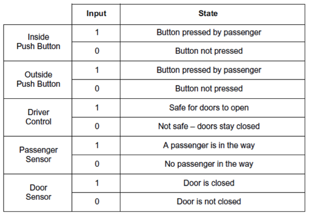
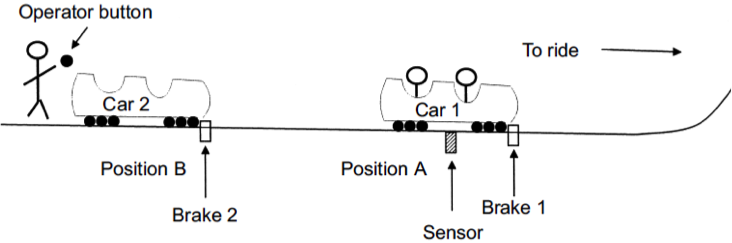
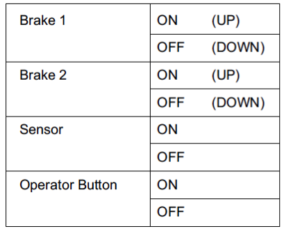
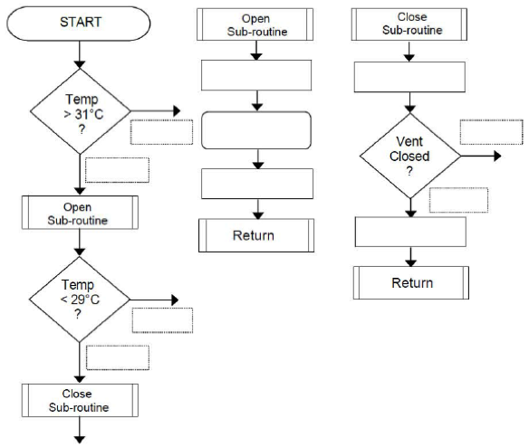
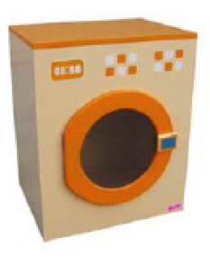
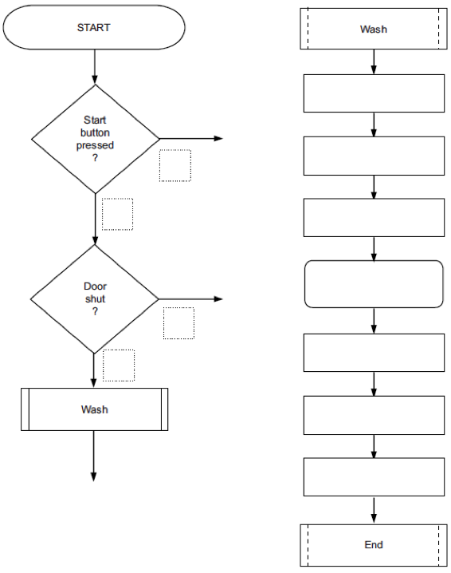
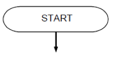
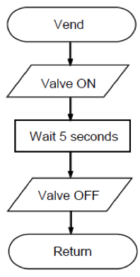
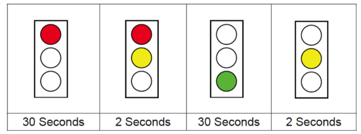
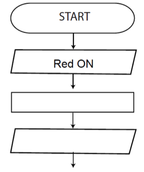

Logic Gates
Table of Contents
1 Introduction
- Logic
Writing a program
- PIC programs are actually very simple to write once you get the hang of them. They appear every year in the exam, and typically carry almost 10% of the marks in the paper. As such, it is vital that you become comfortable with writing these in the exam-board style.
- Remember that each step is performed one at a time.
- Each shape has a flow-line coming into it, and (apart from decisions) one flow-line coming out. Decision diamonds need both a "Y" and an "N" flow line coming out of them.
- Remember that when writing programs in Circuit Wizard, you need to specify which output pin you want to turn on or off. You may be familiar with seeing output (parallelogram) shapes with things like "High 2" written on your programs (in this case, the instruction is to turn pin 2 on).
- In the exam, you won't be asked to state a particular pin. You'll need to write things like, "Motor Forward", "Motor off", or "Green LED on".
- For inputs in Circuit Wizard, you'll normally ask questions like, "Is D0 on". In the exam, you'll need to refer to specific things in the question, so you could write things like, "Inside button pushed?". Text in diamonds must always be phrased as a question, which can have a Yes/No answer.
2 Recap
Past Paper Questions
- June 2007, Q3. This question is about constructing a flowchart to control the train door. The signal from the driver ensures that the doors can only open when it is safe. The passenger sensor on the edge of the door signals if it hits an obstruction. The following inputs are available.

- Draw a flowchart on a blank page that:
- Waits until the signal from the driver that states that it is safe for the doors to open,
- Opens the doors when a passenger presses either push button,
- Waits 10 seconds then closes the door,
- If the door hits an obstruction it should open and wait another 10 seconds before closing,
- Repeats the cycle.
- Add the missing lines with arrowheads and the states to the decision box outputs of the flowchart on the opposite page.
- Marks will be awarded for:
- Correct output state of the decision boxes (4 x 2 marks)
- Correct connecting line drawn with arrows. (6 x 1 mark)

- June 2008, Q4. This question is about programming PICs to run a roller-coaster loading station. When the operator presses the button, Car 1 rolls onto the ride and, once it is clear, Car 2 rolls into Position A. The whole process is controlled using a Peripheral Interface Controller (PIC) chip. The loading track is on a slight slope so that the cars roll forward when their brake is lowered.

- The Sensor is ON when there is a car above it.
- The Sensor should be checked before Brake 2 is lowered.
- A 10 second delay is required to allow Car 1 to move away before Car 2 rolls forward.
- The process is a Repeatable/Continuous Operation. Write a sequence of instructions that would act as the control program for the above roller-coaster loading system.
- Operational instructions to be used:

- Assume that the cars are in the position in the diagram on the previous page and that both Brakes are UP at the start.
- Marks will be awarded for: -
- correct sequence (6 marks)
- correct use of the sensor (2 marks)
- correct use of a delay (2 marks)
- continuous operation. (2 marks)

- June 2010, Q5b. The temperature control system operates as follows:
- The vent opens when the temperature is higher than 31°C
- To fully open the vent takes 5 seconds going UP
- The vent closes when the temperature is less than 29°C
- To close, the vent goes DOWN until closed
- This process is continuous (non stop).
Complete the flowchart of the program for the micro controller by adding:
- each correct output state of the decision boxes (6 marks) Y for Yes and N for No
- the following statements to the correct Process Boxes (5 marks)
- Vent motor OFF
- Vent motor OFF
- Vent DOWN
- Vent UP
- Wait 5 seconds
- each correct connecting line, there are four missing lines. (4 marks)

- June 2011, Q4b. This question is about a washing machine control system model. The washing machine model is made from plywood and has:
- a door that opens and shuts
- a button to start the simulated wash
- a door lock to stop the door opening
- a geared motor to turn the wash drum
- an LED that lights to show that the drum is turning.

- The operation of a temperature control system is as follows: -
- the user presses the start button switch to start the wash cycle
- the system checks that the door is shut
- if shut, the door locks
- the LED goes ON
- the motor turns the drum for 30 seconds
- the LED goes OFF
- the door unlocks
- the system waits for the next push of the start button.
- Complete the flowchart (below) of the program for the micro controller by adding:
- each correct output state of the decision boxes (4 marks) (use 1 for Yes and 0 for No) each correct connecting line.
- There are three missing lines. (3 marks)
- The following statements to the correct Process Boxes (7 marks)
- Lock OPEN
- LED OFF
- LED ON
- Motor ON
- Lock CLOSE
- Wait 30 seconds
- Motor OFF

- June 2012, Q5d. (i) In a coffee vending machine, the machine is to be programmed to operate as follows. The machine waits for the customer to insert a 50p coin and then drops a cup. Draw a simple flowchart to show how this would be represented. (3 marks)

- (d) (ii) If the customer presses the Sugar button the machine adds sugar. Draw a simple flowchart to show how this would be represented. (4 marks)
- (d) (iii) The vend subroutine is shown to the right. Describe the operation of the subroutine. (3 marks)

- (d) (iv) Explain the advantage of using subroutines in complex programs. (2 marks)
- June 2013, Q6. You are advised to spend about 15 minutes on this question. This question is about programming a microcontroller (PIC) to control a traffic light.
- (a) The lights should repeatedly cycle through the following sequence.
 Complete the flowchart below to show how to program the microcontroller (PIC) to control the traffic light. (12 marks) 
- (b) Fully explain why Light Emitting Diodes (LEDs) are replacing lamps in modern traffic lights. (3 marks)
- (c)